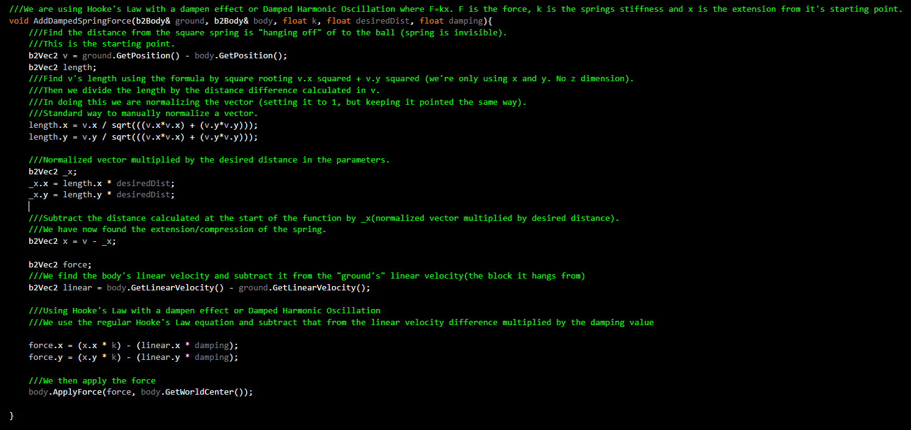

Physics Simulations
Buoyancy(Box2D)
This is a buoyancy simulation done in Box2D using buoyancy physics equations along side arc segment equations to give the circle the effect that it is floating on water. There is an invisible line that is acting as the water line in this simulation.
Springs(Box2D)
The left spring is constant without a dapening factor where the right spring has a dapening factor as you'll see it eventually slows down and the left spring does not.

Realistic Collision(C#/XNA)
A pool game depicting realistic collision between objects, in this case they are balls. I combine coefficient of restitution and conservation of momentum to resolve realistic collisions based on physics formulas. The balls all use the Equations of Motion to move when they are hit and the ball being shot out of the cannon uses the same Equations of Motion.
Cloth Simulation(C++/OPENGL)
A cloth simulation done in OpenGL with C++. This is using mass points which are connected by springs to make triangles. The mass points have a gravity option which allowed me to keep the corner mass point frozen to better emulate the cloth physics. The springs have a dampening effect (like the one of the springs in my previous simulation) which allows each spring to react differently according to their distance. I also have a custom Vector class which I created for this project as well as future projects which contains operation overloading as well as other Vector mathematics.
BACK
HOME